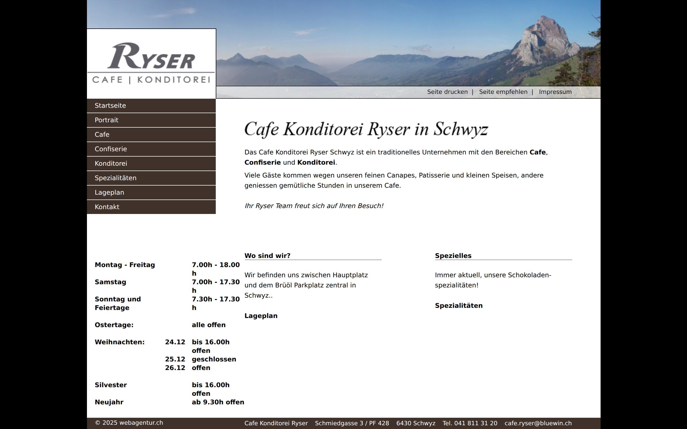
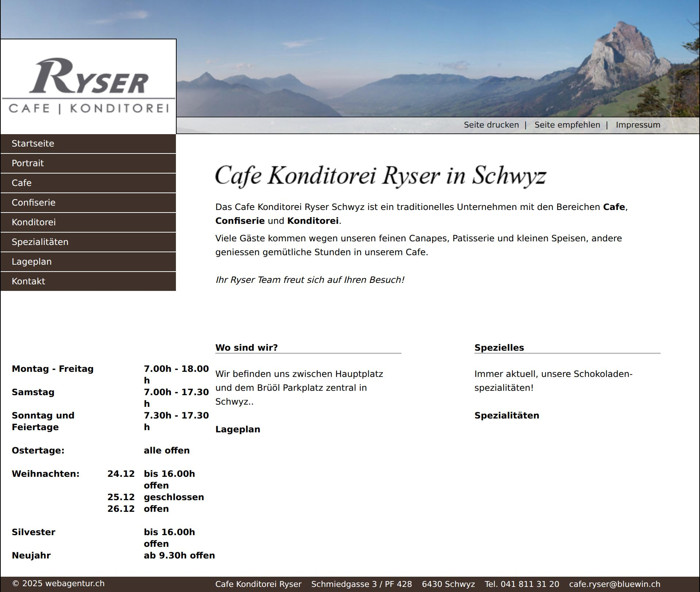

Café Confiserie Ryser
Traditionelles Café, Confiserie und Konditorei mitten in Schwyz.
E-Mail schreibenWas wir tun
- Cafébetrieb
- Konditorei
- Patisserie
- Confiserie
- Felchlin-Schokolade
- Schwyzer-Örgeli
Was Sie bei uns finden
Wir führen Cafébetrieb, Konditorei, Patisserie und Confiserie unter einem Dach. Unsere Schokolade beziehen wir von Felchlin; aus dem eigenen Sortiment stammen unter anderem die Schwyzer-Örgeli. Die Adresse: 6430 Schwyz.
Öffnungszeiten
Montag bis Freitag 7.00 – 18.00 Uhr. Samstag 7.00 – 17.30 Uhr. Sonntag und Feiertage 7.30 – 17.30 Uhr. An Ostertagen alle geöffnet. Am 24.12. bis 16.00 Uhr offen, am 25.12. geschlossen, am 26.12. offen. Silvester bis 16.00 Uhr, Neujahr ab 9.30 Uhr.
Kontakt
Wir freuen uns auf Ihre Nachricht — schreiben Sie uns einfach, wir melden uns zurück.
Aktuelle Website
Zum Vergleich: so sieht die bestehende Website heute aus.

